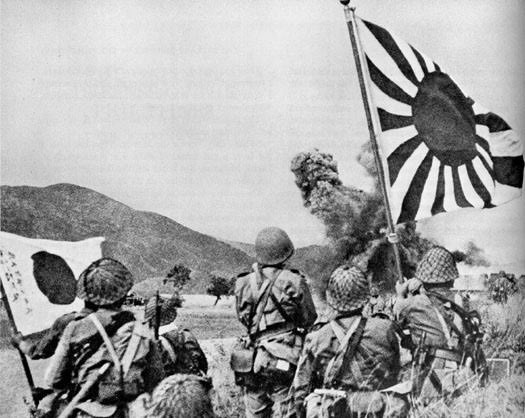

Historical Timeline of Pangasinan
Japanese Occupation and World War II

December 22, 1941
Japanese forces invade Pangasinan during World War II.
 January 9-13, 1945
January 9-13, 1945
Allied Forces land in Lingayen and begin the liberation of Pangasinan.
 February 1945
February 1945
The provincial government was restored with Sofronio Quimson as governor and Dagupan temporarily as the capital.